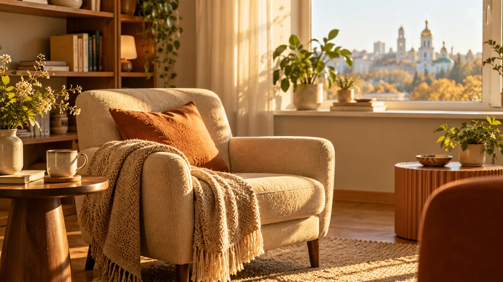
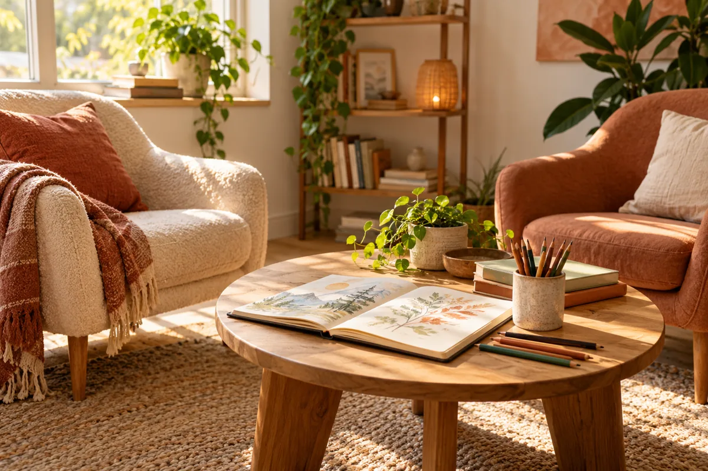
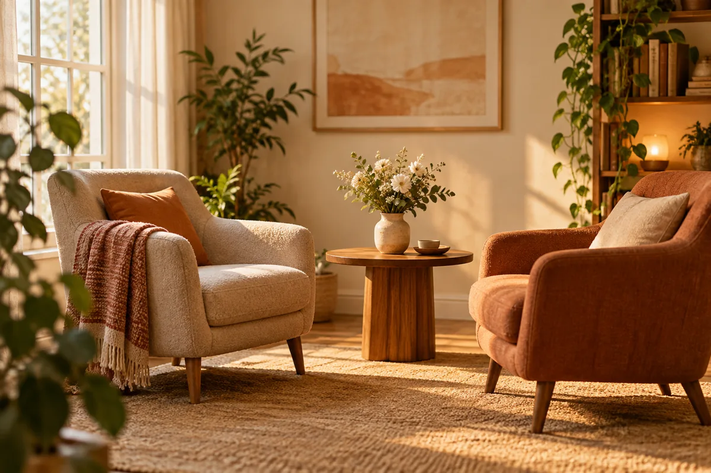
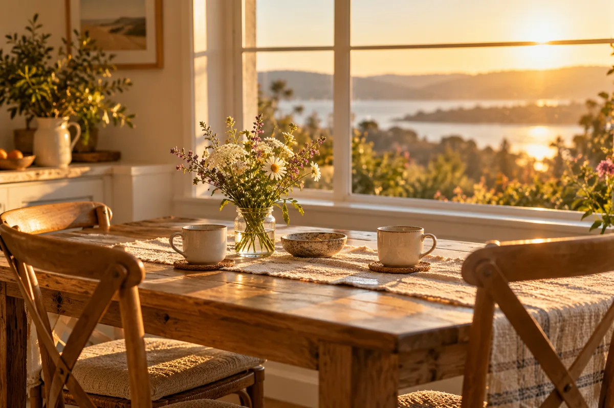

01 / ДЛЯ СЕБЕ
Індивідуальна терапія
Коли складно з емоціями, стосунками, втратою чи власними рішеннями.
1700 грн60 хв · онлайн або очно
Домовитися про зустрічФОРМАТИ ЗУСТРІЧЕЙ
Одна консультація триває 60 хвилин. Кількість консультацій підбирається індивідуально під ваш запит. Якщо не знаєте, який формат підійде, зателефонуйте та коротко опишіть запит.

01 / ДЛЯ СЕБЕ
Коли складно з емоціями, стосунками, втратою чи власними рішеннями.

02 / ДЛЯ ПІДЛІТКА
Коли підлітку важко з настроєм, самооцінкою, змінами або стосунками з близькими.

03 / ДЛЯ ПАРИ
Коли у стосунках накопичилися суперечки, дистанція або питання довіри.

04 / ДЛЯ СІМ’Ї
Коли родині важко домовитися, почути одне одного або пройти зміни разом.
ЯК ЗАПИСАТИСЯ
Назвіть бажаний формат і зручний час. Якщо не знаєте, який вид консультації обрати, це можна обговорити.
Зателефонувати: +380 97 450 44 33